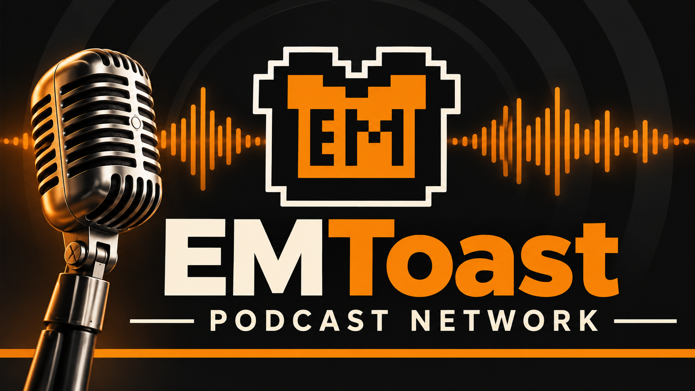
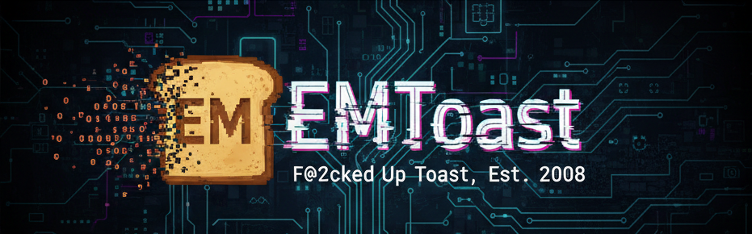
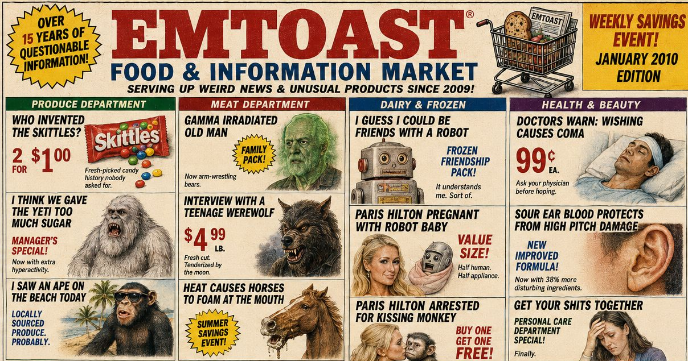
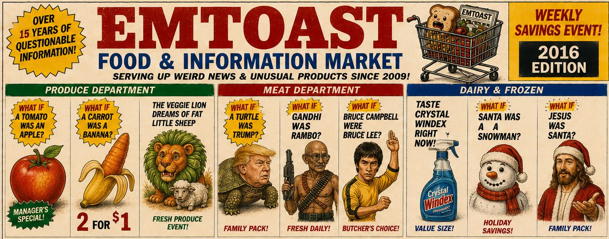
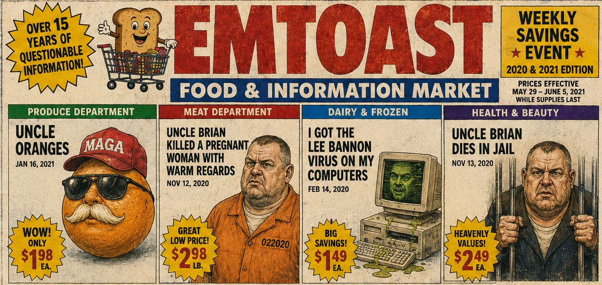

Resist Automated Authority YT + Podcast


Related posts

Podcast: Why EMToast Has Survived Since 2008
Well friends, we've been feeding the content of EMToast directly into AI to see what kind of scrambling can be…

EMToast: The Absurd Universe Takes Shape (2010–2011) | Podcast Deep Dive
EMToast: The Absurd Universe Takes Shape (2010–2011) continues the deep dive into the strange evolution of EMToast, exploring how the…

EMToast: The Digital Surrealism Era (2016–2018) | Podcast Deep Dive
EMToast: The Digital Surrealism Era (2016–2018) continues the chronological deep dive into EMToast history, exploring the surreal humor, fake news…

EMToast: The Pandemic, Paranoia, and Digital Chaos (2020–2021) | Podcast Deep Dive
EMToast: The Pandemic, Paranoia, and Digital Chaos (2020–2021) | Podcast Deep Dive explores one of the strangest chapters in EMToast…